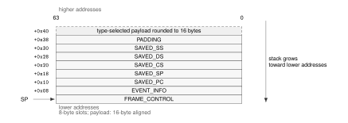
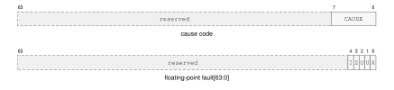

Architectural Event Processing Model
An architectural event is a synchronous or asynchronous condition delivered through the common event-entry mechanism. Synchronous exceptions are faults or traps. Asynchronous events are maskable interrupts or NMIs. A fault and a trap are exception subtypes, not peers of exception. SYSCALL is not an architectural event: it is an explicit call into the supervisor ABI and uses the separate supervisor-call state described in the privileged programming model.
Every exception, maskable interrupt, and NMI transfers to the exact program counter in EPC after loading ECS and EDS. Hardware supplies an event code and a frame whose payload layout is fixed by the event source. Software begins at one common entry point and dispatches by the event code.
Related normative instruction entries are BKPT, ERET, and RESET.
Event Code and Sources
Every delivered event carries a 32-bit code. The high byte is the event class and the low 24 bits are an ID in that class’s namespace.
Architectural Event Code
Architectural Event Classes
| Value | Class | ID interpretation |
|---|---|---|
0x00 |
EXCEPTION | architecture-defined exception ID |
0x01 |
INTERRUPT | opaque platform-assigned global interrupt ID |
0x02 |
NMI | zero or an architecturally/platform-defined NMI source ID |
0x03..0xFF |
reserved | – |
Assigned Base Exception IDs
| ID | Name | Subtype or source |
|---|---|---|
0x00 |
DEBUG_TRACE | debug trace trap |
0x02 |
BREAKPOINT | breakpoint trap |
0x03 |
ILLEGAL_INSTRUCTION | illegal-instruction fault |
0x08 |
PRIVILEGE_FAULT | privilege fault |
0x09 |
PAGE_FAULT | address-translation, access, or atomic-alignment fault |
0x0A |
DIVIDE_ERROR | integer divide fault |
0x0D |
INVALID_CONTROL_STATE | invalid control-state fault |
0x0E |
FLOATING_POINT_FAULT | floating-point fault or trap |
0x18 |
DOUBLE_FAULT | event-delivery failure |
0x19 |
MACHINE_CHECK | corrected trap or recoverable/fatal machine-check exception |
0x1A |
BUS_ERROR | synchronous precise bus-error fault |
Architectural Event Boundaries and Priority
| Code | Event | Kind | Saved PC | Priority |
|---|---|---|---|---|
EXC:00 |
DEBUG_TRACE |
trap | next trace unit | 5 |
EXC:02 |
BREAKPOINT |
explicit trap | following instruction | 4 |
EXC:03 |
ILLEGAL_INSTRUCTION |
fault | faulting instruction | 3 |
EXC:08 |
PRIVILEGE_FAULT |
fault | faulting instruction | 3 |
EXC:09 |
PAGE_FAULT |
fault | faulting instruction | 3 |
EXC:0a |
DIVIDE_ERROR |
fault | faulting instruction | 3 |
EXC:0d |
INVALID_CONTROL_STATE |
fault | faulting instruction | 3 |
EXC:0e |
FLOATING_POINT_FAULT |
fault | faulting instruction | 3 |
EXC:18 |
DOUBLE_FAULT |
delivery failure | interrupted event boundary | 1 |
EXC:19 |
MACHINE_CHECK |
machine check | selected by PRECISE and corrected status | 2 |
EXC:1a |
BUS_ERROR |
fault | faulting instruction | 3 |
NMI:source |
NMI |
asynchronous | next instruction or repeat continuation | 6 |
INTERRUPT:platform |
INTERRUPT |
asynchronous | next instruction or repeat continuation | 7 |
Architectural Event Producers and Delivery State
| Event | Producer | Committed State | Frame | Payload |
|---|---|---|---|---|
DEBUG_TRACE |
completion of a TF-selected trace unit | completed trace unit | BASIC |
none |
BREAKPOINT |
BKPT | BKPT completed | BASIC |
none |
ILLEGAL_INSTRUCTION |
decode or instruction-validity check | no effects of the faulting instruction | ERROR |
error code |
PRIVILEGE_FAULT |
privilege check | no effects of the faulting instruction | BASIC |
none |
PAGE_FAULT |
segment, translation, access, or atomic-alignment check | no effects of the faulting instruction | PAGE_FAULT |
error code, fault EA, and linear address |
DIVIDE_ERROR |
integer divide operation | no effects of the faulting instruction | ERROR |
error code |
INVALID_CONTROL_STATE |
control-state validation | no effects of the faulting instruction | ERROR |
error code |
FLOATING_POINT_FAULT |
enabled floating-point exception | no destination or accrued-flag effects of the faulting instruction | ERROR |
error code |
DOUBLE_FAULT |
architectural event-delivery failure | no partial first delivery state | AUXILIARY |
delivery-failure auxiliary state |
MACHINE_CHECK |
processor or memory-system machine-check source | selected by PRECISE and RETRY_SAFE | AUXILIARY |
machine-check auxiliary state |
BUS_ERROR |
synchronous acknowledged bus failure | no CPU state effects of the faulting instruction | AUXILIARY |
bus-error auxiliary state |
NMI |
admitted non-maskable interrupt source | all earlier committed state | BASIC |
none |
INTERRUPT |
admitted maskable interrupt source | all earlier committed state | BASIC |
none |
Unassigned base-profile exception IDs are reserved. External interrupt IDs do not share a namespace with exception IDs. Interrupt-controller routing, native-ID mapping, ownership, acknowledgement, trigger mode, masking, and end-of-interrupt signaling belong to the platform ABI. An interrupt ID unknown to software still reaches the common entry; the platform dispatcher applies its unhandled or spurious-interrupt policy.
A restartable fault saves the faulting instruction or its architecturally defined restart point. A trap saves the following instruction. An interrupt or NMI saves the next instruction that would otherwise execute. An event taken during repeat execution saves the active repeat continuation PC and records the remaining repeat state in the always-present FRAME_EXT1 slot.
Event Priority and Debug Trace
When events compete at one architectural boundary, the lower priority number in the event table wins. This orders delivery failure before machine check, current synchronous faults, explicit traps, DEBUG_TRACE, NMI, and maskable interrupt. A lower-priority asynchronous event remains pending after a higher-priority event is selected.
A trace unit is one ordinary committed instruction, one committed REP or REPcc body iteration, or one completed REPG group iteration. Completion of a zero-count REP, REPcc, or REPG is also one trace unit. TF is sampled at the start of the unit. If sampled TF is one and sampled RF is zero, successful completion commits the unit and then delivers DEBUG_TRACE with the following trace-unit boundary as its saved PC.
The TRACE marker instruction is an ordinary instruction for this trace-unit rule and separately records the marker described by its instruction entry. The tracing terminology distinguishes the instruction, trace unit, and event.
RF is a one-shot DEBUG_TRACE suppressor. If sampled RF is one, successful trace-unit completion clears RF and does not produce DEBUG_TRACE. A synchronous fault or asynchronous event before that completion preserves RF. WRSTATUS, ERET, and SYSRET changes to TF or RF apply to the next trace unit. Event entry saves the old STATUS image and then clears live TF and RF. RF does not suppress an explicit trap such as BKPT.
Entry Admission and Event Depth
The event-entry state is usable only while ECR.V is set. A maskable interrupt is admitted only when ECR.V, STATUS.IE, and the depth limit all permit it: the current event depth must be less than ECR.MAX_EDEPTH. Otherwise the interrupt remains pending at the interrupt controller. A synchronous exception that requires delivery while ECR.V is clear cannot be deferred and enters SHUTDOWN. An NMI observed while ECR.V is clear sets the hardware-managed ECR.NMI_P latch and is not admitted. After ECR.V becomes one, hardware admits that pending NMI before the next instruction boundary when STATUS.NI is clear. While STATUS.NI remains set, the NMI remains pending. Multiple NMI observations coalesce in ECR.NMI_P.
Event depth is zero outside event handling. A successful entry saves the old depth in the frame and increments the hidden current depth. ECR.MAX_EDEPTH equal to zero prevents maskable interrupt admission; values 1 through 15 limit only maskable interrupts and do not suppress synchronous exceptions or NMI. Depth 15 is representable but terminal: any further event requirement enters SHUTDOWN. At depth 14 or less, a delivery failure can still create a DOUBLE_FAULT frame; at depth 15 there is no representable child frame.
Supervisor Event Stacks and Nesting
The four supervisor stack pairs have fixed roles. SSS:SSP is the SYSCALL working stack. ISS:ISP, FSS:FSP, and DSS:DSP are event stack levels 1, 2, and 3.
Supervisor Stack Roles
| Level | Pair | Role | Use |
|---|---|---|---|
| call | SSS:SSP |
supervisor call | SYSCALL working stack |
| 1 | ISS:ISP |
maskable interrupt | external interrupts and IPIs |
| 2 | FSS:FSP |
fault/exception | faults, traps, NMI, and machine check |
| 3 | DSS:DSP |
double fault | DOUBLE_FAULT and event-delivery failure only |
The processor tracks a hidden two-bit current event stack level while STATUS.EA is set. A maskable interrupt requests level 1, an exception other than DOUBLE_FAULT or an NMI requests level 2, and DOUBLE_FAULT requests level 3. If entry is from a context with EA clear, hardware loads the pair assigned to the requested level. If entry is already event-active and the request is for a higher level, hardware moves to the higher pair. A same- or lower-level nested event retains the current SS:SP and appends its frame instead of reloading a configured top and overwriting an older frame. An interrupt-handler fault therefore moves from level 1 to level 2, while an interrupt admitted during an exception remains on level 2. ERET restores the saved event-active and stack-level state.
if STATUS.EA == 0:
selected_esl = requested_esl
load the stack pair assigned to selected_esl
else if requested_esl > current_esl:
selected_esl = requested_esl
load the stack pair assigned to selected_esl
else:
selected_esl = current_esl
keep the current SS:SP
After stack selection, hardware rounds the event payload length up to 16 bytes, adds the fixed 64-byte frame, and subtracts that total from the active stack pointer. For a new or higher level the active pointer is ISP, FSP, or DSP; for same- or lower-level nesting it is the current SP. Hardware validates and atomically stores the entire frame before committing the new SP. The configured stack-top register is never changed.
DOUBLE_FAULT and event-delivery failure use DSS:DSP. Current event stack level is meaningful only while STATUS.EA is set. ERET validates and restores both saved depth and saved stack level.
Event Entry State
Before making an event visible, hardware validates EPC, ECS, EDS, the selected stack state, and the complete frame storage range. It then stores the frame, loads the entry segments and PC, sets STATUS.PM and STATUS.EA, and clears STATUS.IE, STATUS.TF, and STATUS.RF as one architectural commit. R0 through R15 and GS0 through GS5 are unchanged; the common entry code preserves whatever its software ABI requires.
NMI entry additionally sets STATUS.NI. Other event classes preserve NI. A further NMI observed while NI is set is recorded by setting ECR.NMI_P. ECR.NMI_P is hardware managed, so WRCR ignores the supplied value for that bit. When entry of an NMI admitted from ECR.NMI_P commits, hardware clears ECR.NMI_P as part of the same architectural transition. A newly observed NMI may set the latch again. An entry failure does not clear the latch before committing the specified delivery-failure result. When ERET successfully restores NI to zero, a pending NMI is delivered before the next instruction boundary.
STATUS.EA is hardware-managed transition state. WRSTATUS must preserve its current value. An attempt to change EA raises INVALID_CONTROL_STATE without modifying STATUS. WRSTATUS may change IE, NI, TF, and RF; its PM and EA values must equal the current values. Clearing NI while ECR.NMI_P is one admits the pending NMI at the next instruction boundary. ERET is legal only while EA is one; SYSRET is legal only while EA is zero. A mismatch raises INVALID_CONTROL_STATE before ERET reads an event frame or SYSRET reads the user-return bank.
Architectural Event Frame
Every event frame begins with exactly eight 64-bit slots. EVENT_INFO contains the event code in bits 31 through 0; its upper half is zero. FRAME_CONTROL contains only frame shape, saved nesting state, saved FLAGS, and saved STATUS. Event classification is carried exclusively by EVENT_INFO.

Architectural Event Frame
Architectural Event Frame Fields
| Offset | Slot | Meaning |
|---|---|---|
| +0x00 | FRAME_CONTROL | frame shape, nesting metadata, saved FLAGS, and saved STATUS |
| +0x08 | EVENT_INFO | event code in bits 31..0; bits 63..32 are zero |
| +0x10 | FRAME_EXT1 | repeat continuation when repeat_saved is one; otherwise zero |
| +0x18 | SAVED_PC | saved program counter |
| +0x20 | SAVED_SP | saved stack pointer |
| +0x28 | SAVED_CS | saved code-segment image |
| +0x30 | SAVED_DS | saved data-segment image |
| +0x38 | SAVED_SS | saved stack-segment image |
| +0x40 | ERROR_CODE | exception-specific error code; unassigned bits are zero |
| +0x48 | FAULT_EA | numeric effective address before segment pre-translation |
| +0x50 | FAULT_LINEAR | address after segment pre-translation |
| +0x58 | EVENT_AUX | double-fault, machine-check, or bus-error auxiliary information |
FRAME_CONTROL Format
D and T abbreviate depth and type.
FRAME_CONTROL Fields
| Field | Bits | Meaning |
|---|---|---|
| frame_size | 0..7 | total allocated frame size in 8-byte units |
| frame_type | 8..11 | optional payload layout code; it does not classify the event |
| saved_edepth | 12..15 | event depth before this entry |
| saved_esl | 16..17 | event stack level before this entry |
| repeat_saved | 18 | repeat continuation state is present in FRAME_EXT1 |
| entry_flags | 19..31 | reserved entry flags; must be zero unless assigned by a later profile |
| flags | 32..47 | saved FLAGS image |
| status | 48..63 | saved STATUS image |
ERET first validates the frame shape and nesting metadata. BASIC requires frame_size 8, ERROR requires 10, and PAGE_FAULT and AUXILIARY require 12. It also requires saved_edepth plus one to equal the current depth and requires saved_esl not to exceed the current stack level. If the saved STATUS image has EA clear, both saved values must be zero. Saved STATUS.PM identifies the interrupted privilege mode.
Only after those checks does ERET validate the saved control state, segment images, PC, SP, depth, and stack level. On success it restores FLAGS, STATUS, CS, DS, SS, SP, PC, event depth, stack level, and any saved repeat continuation as one commit. EVENT_INFO and the event-specific payload remain available to software.
Event Payloads
Payload starts at offset +0x40. Hardware allocates only the defined payload prefix, rounds it up to a 16-byte boundary, and zeros the padding. The frame-size unit remains one 8-byte slot.
Architectural Event Frame Types and Sizes
| Code | Type | Payload | Allocated | Total | Size | Last slot |
|---|---|---|---|---|---|---|
| 0x0 | BASIC | 0 | 0 | 64 | 8 | none |
| 0x1 | ERROR | 8 | 16 | 80 | 10 | ERROR_CODE |
| 0x2 | PAGE_FAULT | 24 | 32 | 96 | 12 | FAULT_LINEAR |
| 0x3 | AUXILIARY | 32 | 32 | 96 | 12 | EVENT_AUX |
Event-to-Frame-Type Assignment
| Delivered event | Frame type |
|---|---|
DEBUG_TRACE, BREAKPOINT, PRIVILEGE_FAULT |
BASIC |
ILLEGAL_INSTRUCTION, DIVIDE_ERROR, INVALID_CONTROL_STATE, FLOATING_POINT_FAULT |
ERROR |
PAGE_FAULT |
PAGE_FAULT |
DOUBLE_FAULT, MACHINE_CHECK, BUS_ERROR |
AUXILIARY |
| interrupt and NMI | BASIC |
The delivered event determines the frame type, and FRAME_EXT1 records repeat continuation. ERROR_CODE is defined separately by each exception and has zero in every unassigned bit. PAGE_FAULT extends that slot with effective-address and linear-address context. AUXILIARY includes all four named slots and permits EVENT_AUX to describe double-fault, machine-check, or bus-error state.
A misaligned AT=0 atomic memory operand uses the PAGE_FAULT frame with ERROR_CODE subtype ATOMIC_ALIGNMENT. FAULT_EA identifies the misaligned effective-address operand and FAULT_LINEAR contains its segment-pretranslated starting address. The fault is reported before the atomic instruction performs a memory read, memory write, or architectural result update.
Page-Fault Error Code
PAGE_FAULT ERROR_CODE Format
SZ, L, E, OP, LVL, and AC denote ACCESS_SIZE, FAULT_LINEAR_VALID, FAULT_EA_VALID, OPERAND, WALK_LEVEL, and ACCESS; A and U denote ATOMIC and USER_DOMAIN.
PAGE_FAULT ERROR_CODE Fields
| Bits | Field | Meaning |
|---|---|---|
| 7..0 | CAUSE |
page-fault cause listed below |
| 9..8 | ACCESS |
0 none, 1 read, 2 write, 3 execute |
| 10 | USER_DOMAIN |
access selected the user-domain permission path |
| 11 | ATOMIC |
access was an atomic read-modify-write |
| 14..12 | WALK_LEVEL |
0 before or without a walk; 1 through 5 identify the PTE level |
| 15 | reserved | zero |
| 23..16 | OPERAND |
zero-based explicit operand ordinal; 0xff for implicit fetch or stack access |
| 24 | FAULT_EA_VALID |
FAULT_EA was produced |
| 25 | FAULT_LINEAR_VALID |
FAULT_LINEAR was produced |
| 26 | reserved | zero |
| 29..27 | ACCESS_SIZE |
0 unavailable or inapplicable; 1 B; 2 W; 3 L; 4 Q |
| 63..30 | reserved | zero |
PAGE_FAULT Causes
| Value | Cause | Detection class |
|---|---|---|
| 0 | NOT_PRESENT |
required PTE is not present |
| 1 | PERMISSION |
accumulated permission excludes the access |
| 2 | MALFORMED_PTE |
structurally invalid PTE |
| 3 | NONCANONICAL |
noncanonical address |
| 4 | SEGMENT_BOUNDS |
segment bounds failure |
| 5 | ATOMIC_ALIGNMENT |
misaligned byte-addressed (AT=0) atomic operand |
| 6 | ADDRESS_TYPE |
address or memory type rejects the access |
Saved STATUS.PM records the originating privilege. USER_DOMAIN distinguishes the ordinary user permission path from the checked user-access path used by supervisor instructions such as MOVUC, MOVCU, and MOVUU. An atomic read-modify-write reports ACCESS=write. NOT_PRESENT and MALFORMED_PTE identify the actual PTE level. PERMISSION identifies the first level, in root-to-leaf walk order, whose accumulated permissions exclude the requested access. A cause detected before a walk reports level zero.
ACCESS_SIZE records the architectural transfer width when one of the B, W, L, or Q widths applies. It is zero when no such width is available or applicable.
FAULT_EA is the numeric effective address before segment pre-translation. FAULT_LINEAR is the result after segment pre-translation. A value not produced is zero and has its corresponding validity bit clear.
Other Exception Error Codes
DIVIDE_ERROR.ERROR_CODE[7:0] is 0 for ZERO_DIVISOR and 1 for SIGNED_OVERFLOW; bits 63..8 are zero.
ILLEGAL_INSTRUCTION Causes
| Value | Cause | Meaning |
|---|---|---|
| 0 | INVALID_OPCODE |
opcode is not assigned |
| 1 | INVALID_EA_FORM |
effective-address form is not legal for the instruction |
| 2 | RESERVED_ENCODING |
assigned instruction uses a reserved field value |
| 3 | UNAVAILABLE_EXTENSION |
required extension is unavailable |
| 4 | EXPLICIT_ILLEGAL |
architected ILLEGAL instruction |
| 5 | INSUFFICIENT_LENGTH |
encoded record is shorter than the selected concrete form requires |
| 6 | INVALID_OPERAND_RELATION |
writable operands use a prohibited overlap relation |
INVALID_CONTROL_STATE Causes
| Value | Cause | Meaning |
|---|---|---|
| 0 | INVALID_SELECTOR |
selector names no available resource |
| 1 | RESERVED_BITS |
reserved bits are nonzero or changed illegally |
| 2 | INVALID_IMAGE |
supplied architectural image is invalid |
| 3 | INVALID_TRANSITION |
requested state transition is illegal |
An unavailable RDPMC ID reports INVALID_SELECTOR; an illegal reserved-bit update reports RESERVED_BITS; an invalid segment, control-register, or SAVE/RESTORE image reports INVALID_IMAGE; and an illegal ERET, SYSRET, or privilege-state transition reports INVALID_TRANSITION.
FLOATING_POINT_FAULT.ERROR_CODE[4:0] is a cause bitmap: bits 4 through 0 are NV, DZ, OF, UF, and NX. All causes generated by the operation are reported together; bits 63..5 are zero.

Simple Exception ERROR_CODE Formats
The cause-code row applies to DIVIDE_ERROR, ILLEGAL_INSTRUCTION, and INVALID_CONTROL_STATE. In the floating-point row, I, Z, O, U, and X abbreviate NV, DZ, OF, UF, and NX.
The bounds instructions report failure through FLAGS.V. Segment bounds failures use PAGE_FAULT. BKPT raises BREAKPOINT; DEBUG_TRACE is generated by the architectural trace mechanism.
Auxiliary Payloads
For an AUXILIARY frame, ERROR_CODE bit 26 is EVENT_AUX_VALID. Bits 24 and 25 are FAULT_EA_VALID and FAULT_LINEAR_VALID when the event can supply those addresses. Every unassigned bit is zero, and an auxiliary or address value not produced is zero with its validity bit clear.
For DOUBLE_FAULT, ERROR_CODE[7:0] identifies the delivery stage:
DOUBLE_FAULT Auxiliary Formats
E, L, and F are EVENT_AUX_VALID, FAULT_LINEAR_VALID, and FAULT_EA_VALID.
DOUBLE_FAULT Delivery Stages
| Value | Stage | Failure |
|---|---|---|
| 0 | ENTRY_STATE |
entry code or segment state validation |
| 1 | STACK_STATE |
selected event-stack state |
| 2 | FRAME_ADDRESS |
complete frame-address formation or translation |
| 3 | FRAME_STORE |
complete frame storage |
When valid, EVENT_AUX[31:0] contains the event code whose delivery failed and bits 63..32 are zero. A FRAME_ADDRESS or FRAME_STORE failure supplies FAULT_EA and FAULT_LINEAR when those values were produced.
For MACHINE_CHECK, the error code has this layout:
MACHINE_CHECK ERROR_CODE Format
E, L, and F are EVENT_AUX_VALID, FAULT_LINEAR_VALID, and FAULT_EA_VALID; P, R, SV, and SRC denote PRECISE, RETRY_SAFE, SEVERITY, and SOURCE.
MACHINE_CHECK ERROR_CODE Fields
| Bits | Field | Meaning |
|---|---|---|
| 7..0 | SOURCE |
0 unknown; 1 core; 2 cache; 3 translation; 4 memory; 5 interconnect |
| 9..8 | SEVERITY |
0 corrected; 1 recoverable; 2 fatal; 3 reserved |
| 10 | PRECISE |
saved PC identifies the responsible instruction and saved CPU state precedes it |
| 11 | RETRY_SAFE |
retry at that precise boundary cannot duplicate an external effect |
| 23..12 | reserved | zero |
| 24 | FAULT_EA_VALID |
FAULT_EA was produced |
| 25 | FAULT_LINEAR_VALID |
FAULT_LINEAR was produced |
| 26 | EVENT_AUX_VALID |
EVENT_AUX was produced |
| 63..27 | reserved | zero |
When valid, EVENT_AUX contains an implementation-defined syndrome. Associated effective and linear addresses are supplied when available.
RETRY_SAFE=1 requires PRECISE=1. The valid severity and continuation combinations are:
MACHINE_CHECK Valid Continuation Combinations
| Severity | PRECISE | RETRY_SAFE | Saved PC and continuation meaning |
|---|---|---|---|
| corrected | 0 | 0 | Trap; saved PC is the instruction following the corrected operation. |
| recoverable | 0 | 0 | Saved PC is the next instruction that would execute at the delivery boundary; saved CPU state is the state at that boundary. It does not identify the responsible operation. |
| recoverable | 1 | 0 | Saved PC identifies the responsible instruction and CPU state precedes it; retry may duplicate an external effect. |
| recoverable | 1 | 1 | Saved PC identifies the responsible instruction and CPU state precedes it; retry cannot duplicate an external effect. |
| fatal | 0 | 0 | Saved PC is the next instruction at the delivery boundary and is diagnostic only. |
| fatal | 1 | 0 | Saved PC identifies the responsible instruction and pre-instruction CPU state for diagnosis only. |
All other combinations are invalid and are not generated. In particular, corrected machine checks never set either bit, PRECISE=0, RETRY_SAFE=1 is invalid for every severity, fatal machine checks never set RETRY_SAFE, and severity 3 is reserved. A fatal event provides no reliable continuation even when its diagnostic state is precise.
For BUS_ERROR, the error code has this layout:
BUS_ERROR ERROR_CODE Format
E, L, and F are EVENT_AUX_VALID, FAULT_LINEAR_VALID, and FAULT_EA_VALID; SZ, OP, LVL, and AC denote ACCESS_SIZE, OPERAND, WALK_LEVEL, and ACCESS; A, U, and R denote ATOMIC, USER_DOMAIN, and RETRY_SAFE.
BUS_ERROR ERROR_CODE Fields
| Bits | Field | Meaning |
|---|---|---|
| 7..0 | CAUSE |
0 no responder; 1 access denied; 2 timeout; 3 data error; 4 other |
| 9..8 | ACCESS |
0 none, 1 read, 2 write, 3 execute |
| 10 | USER_DOMAIN |
access selected the user-domain permission path |
| 11 | ATOMIC |
access was an atomic read-modify-write |
| 14..12 | WALK_LEVEL |
0 outside a walk; 1 through 5 identify the PTE level |
| 15 | reserved | zero |
| 23..16 | OPERAND |
zero-based explicit operand ordinal; 0xff for implicit fetch or stack access |
| 24 | FAULT_EA_VALID |
FAULT_EA was produced |
| 25 | FAULT_LINEAR_VALID |
FAULT_LINEAR was produced |
| 26 | EVENT_AUX_VALID |
EVENT_AUX was produced |
| 29..27 | ACCESS_SIZE |
0 unavailable or inapplicable; 1 B; 2 W; 3 L; 4 Q |
| 30 | RETRY_SAFE |
retry cannot duplicate an external effect |
| 63..31 | reserved | zero |
A bus error during a page walk reports the level whose PTE transaction failed. When valid, EVENT_AUX contains the final memory-system address available for the failed transaction. For a slot-addressed access, this is the slot address and not a byte address.
Machine-Check and Bus-Error Continuation
A corrected MACHINE_CHECK is a trap, has both PRECISE and RETRY_SAFE clear, and saves the following instruction. A recoverable machine check uses the valid combinations in the auxiliary-payload table. When PRECISE is one, the saved PC identifies the responsible instruction boundary and CPU architectural state is the state from before that instruction. When it is zero, the saved PC is the next instruction that would execute at the delivery boundary and CPU state corresponds to that boundary; neither identifies the responsible operation. RETRY_SAFE may be one only with PRECISE=1 and additionally guarantees that returning to the responsible boundary cannot duplicate an external effect. A fatal machine check always clears RETRY_SAFE; PRECISE then describes diagnostic location quality and never guarantees reliable continuation.
BUS_ERROR is a synchronous precise fault. CPU architectural state remains uncommitted and the saved PC identifies the responsible instruction boundary. Its separate RETRY_SAFE bit states whether an external effect might already have occurred. Page-walk bus errors and ordinary byte-addressed-memory bus errors are retry-safe. A slot transaction reports the value determined by its acknowledgement result.
Software interprets the machine-check continuation fields before choosing a return or recovery action.
Repeat Continuation
When FRAME_CONTROL.repeat_saved is set, FRAME_EXT1 records the active repeat context. When the bit is clear, FRAME_EXT1 is zero. Event entry clears active architectural repeat state, and ERET restores it atomically with the saved PC and control state. During single-instruction repeat, SAVED_PC is the repeated body boundary. For REPG, software reconstructs the group start from SAVED_PC and the encoded byte-distance delta. ERET preserves the continuation unless supervisor software edits the frame before return.
FRAME_EXT1 Repeat Continuation Format
K abbreviates kind.
FRAME_EXT1 Repeat-Continuation Fields
| Field | Bits | Meaning |
|---|---|---|
| rep_reg | 0..3 | general-purpose counter register R0..R15 |
| rep_cc | 4..7 | condition code for REPcc; T for unconditional REP/REPG |
| repeat_kind | 8..9 | : REP/REPcc, 1: REPG, 2..3: reserved |
| reserved | 10..15 | reserved, must be zero |
| group_start_delta | 16..31 | unsigned byte distance from saved PC to the first grouped instruction; zero for REP/REPcc |
| body_bytes | 32..47 | grouped-repeat body length in bytes; zero for REP/REPcc |
| reserved | 48..63 | reserved, must be zero |
Delivery Failure and Shutdown
Failure to validate the common entry context, establish the selected stack, or store a complete event frame is delivered as DOUBLE_FAULT on DSS:DSP. Failure while DOUBLE_FAULT is already being delivered enters SHUTDOWN. SHUTDOWN retires no further instructions and can be exited only by a platform reset. The frame save and all architectural entry state remain atomic, so a failed attempt never exposes a partially stored frame or partially changed execution context.
Event Reset and Context State
Warm RESET Contract
| Property | Architectural Rule |
|---|---|
| Scope | executing logical processor |
| Required privilege | supervisor |
| Serialization | complete prior memory effects and pending write-combining stores before reset state commits |
| Restart | running at BOOTPC after instruction-fetch synchronization |
| Other logical processors | unchanged |
Architectural Reset State
| State | Reset Value |
|---|---|
| R0, R1, R2, R3, R4, R5, R6, R7, R8, R9, R10, R11, R12, R13, R14, R15, SP | 0 |
| FLAGS | 0 |
| STATUS | PM=1; all other STATUS bits 0 |
| CS, DS, SS, GS0, GS1, GS2, GS3, GS4, GS5 | 0 |
| PC | BOOTPC |
| PTCR, ASCR, ECR | 0 |
| EPC, ECS, EDS, SPC, SCS, SDS | 0 |
| URPC, URSP, URCS, URDS, URSS, URCTL | 0 |
| SSS, SSP, ISS, ISP, FSS, FSP, DSS, DSP | 0 |
| PMC, CYCLE, INSTRET, PTWALK | 0 |
| F0–F15, FSTATUS, FFLAGS, extension_state | 0 |
| hidden_repeat_state, hidden_load_reservation | invalid |
| hidden_current_edepth | 0 |
| hidden current event stack level | invalid |
| ECR.NMI_P | 0 |
| local_translation_cache, local_page_walk_cache, local_prefetch_state | invalid |
| coherent_data_and_instruction_cache_contents | retained as coherent contents |
| execution_state | running at BOOTPC |
| BOOTPC, BOOTCFG | platform supplied on cold reset; preserved by warm RESET |
Warm RESET applies the complete generated state table to the executing logical processor only. Cold reset initializes BOOTPC and BOOTCFG before applying the same processor-state image to each logical processor selected by the platform reset event. Software initializes entry segments, exact entry PCs, and configured stack tops before setting ECR.V or entering user mode.
ECR, entry and stack registers, hidden event depth and stack level, and the user-return bank are per-logical-processor state. System software includes the applicable state when switching supervisor contexts. Event frames are ordinary memory owned by the interrupted supervisor context.